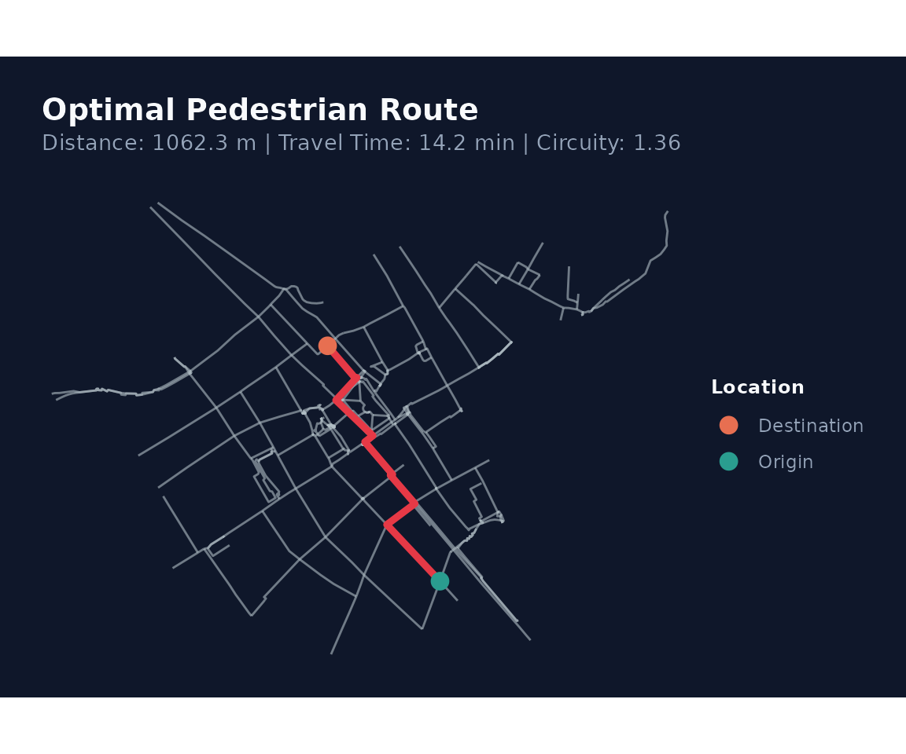
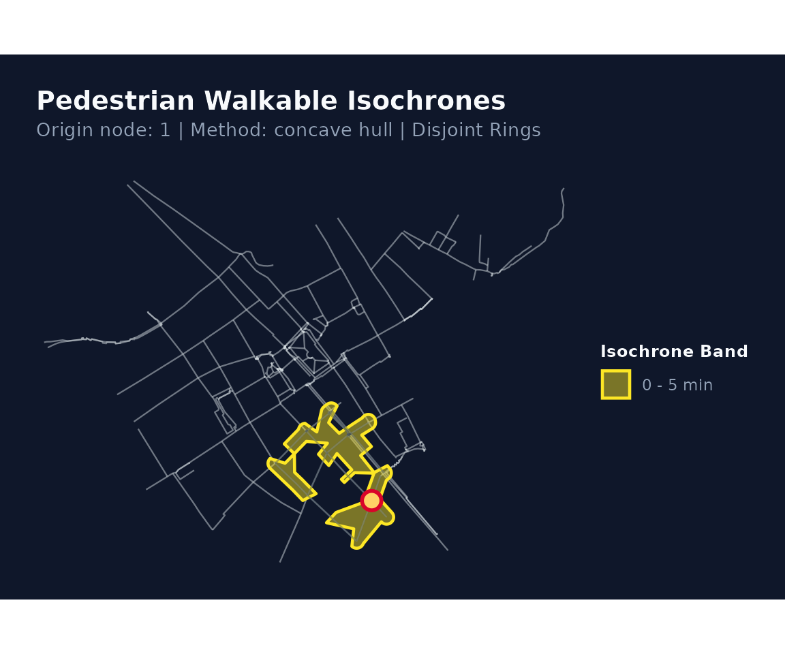
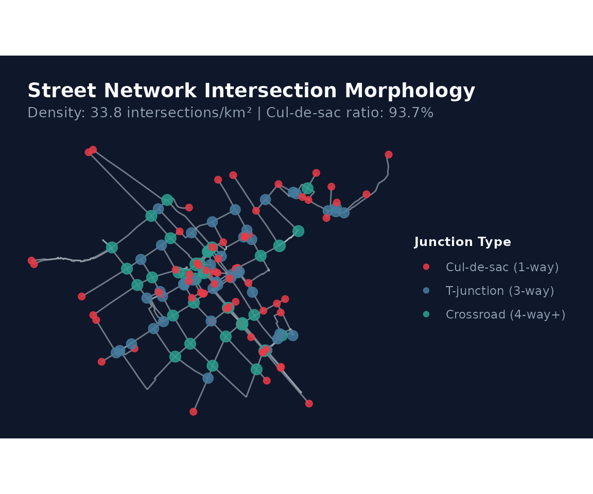
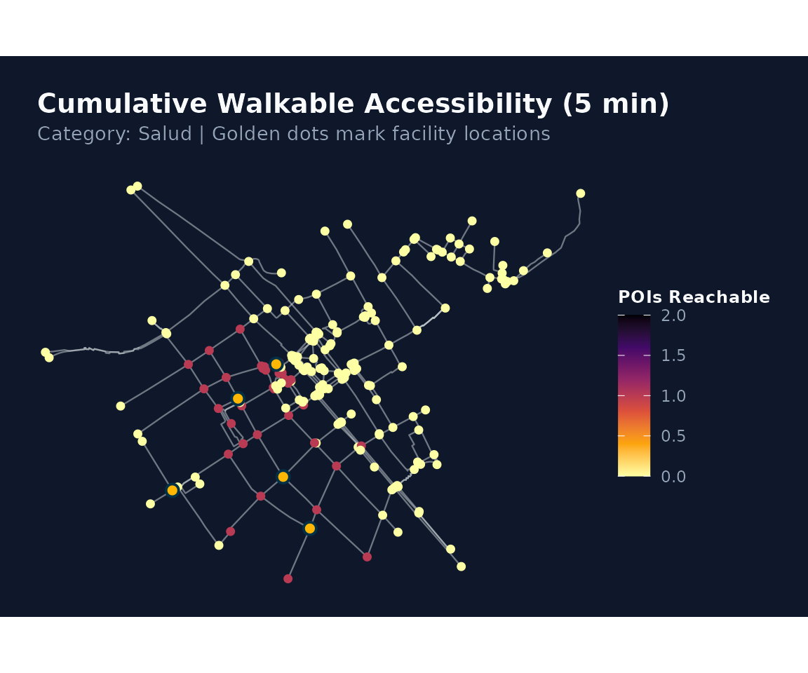
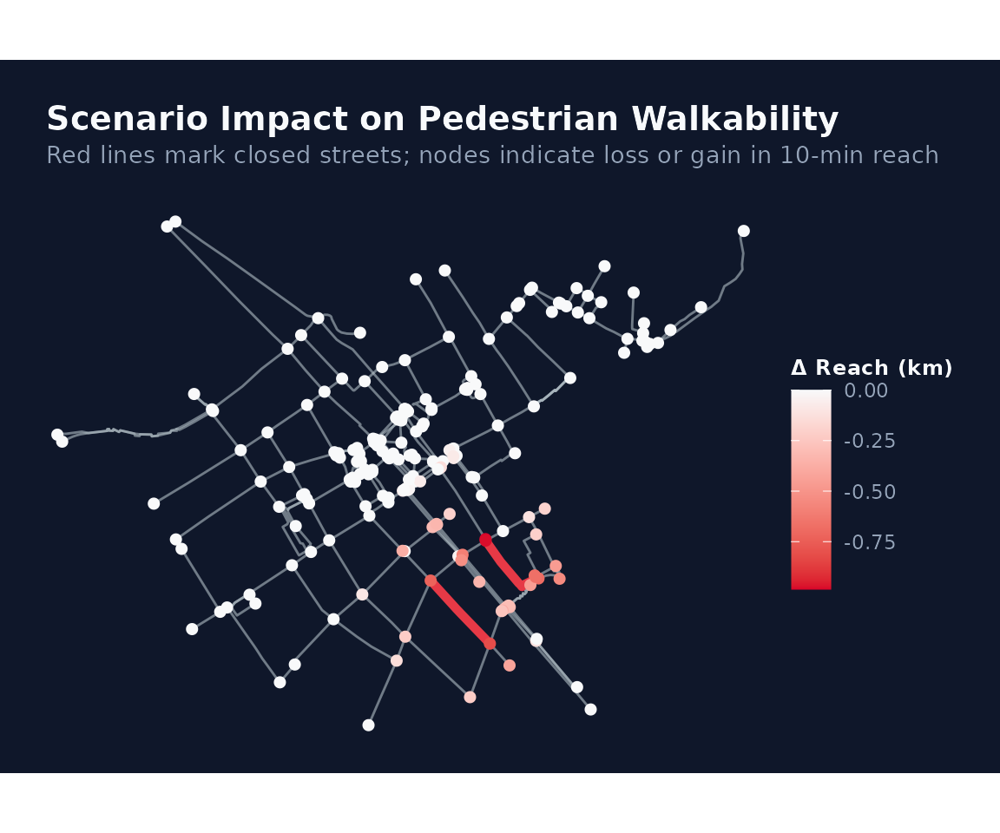

Análisis Avanzado de Redes Peatonales: Ruteo, Isócronas, Accesibilidad y Simulación
Source:vignettes/analisis-avanzado.Rmd
analisis-avanzado.RmdIntroducción
El paquete walkability ofrece un
conjunto integral de herramientas de alto rendimiento para el análisis
cuantitativo de la movilidad peatonal, la transitabilidad activa y la
morfología del espacio urbano.
Respaldado por un núcleo computacional en Rust
paralelizado a nivel de hilos de CPU con rayon,
walkability incorpora capacidades analíticas avanzadas:
-
Ruteo peatonal individual y análisis de circuidad
(
walk_shortest_path). -
Generación de polígonos de isócronas y subredes
alcanzables (
walk_isochrone). -
Métricas morfológicas de intersecciones y conectividad
urbana (
walk_intersection_density). -
Accesibilidad acumulativa a equipamientos urbanos
(POIs) (
walk_compute_access). -
Simulación de intervenciones urbanas y análisis de
escenarios (
walk_scenario_close,walk_compare_scenarios). -
Interoperabilidad con grafos espaciales
(
as_sfnetwork,as_tidygraph).
En esta viñeta demostraremos el uso de cada una de estas funciones utilizando los conjuntos de datos reales de calles incluidos en el paquete.
1. Carga de Datos y Preparación de la Red
Cargamos la red vial del Centro Histórico de Cusco
(streets_cusco), proyectada en coordenadas métricas UTM
Zona 19S (EPSG:32719):
library(walkability)
library(sf)
#> Linking to GEOS 3.12.1, GDAL 3.8.4, PROJ 9.4.0; sf_use_s2() is TRUE
# Cargar dataset real empaquetado
data(streets_cusco)
# Construir grafo peatonal limpio y estructurado
net <- walk_build_network(
data = streets_cusco,
walk_speed_kmh = 4.5,
repair = TRUE,
snap_tolerance_m = 5.0,
keep_components = "largest",
verbose = FALSE
)
print(net)
#>
#> ── Walkability Network ─────────────────────────────────────────────────────────
#> ✔ Total nodes: 566 (Giant component: 211)
#> ✔ Total edges: 234 segments (23.2 km)
#> ✔ Walking speed: 4.5 km/h (1.25 m/s)
#> ✔ Connected components: 119
#> ✔ CRS: EPSG:327192. Ruteo Peatonal Origen-Destino y Circuidad
(walk_shortest_path)
La función walk_shortest_path() calcula el camino óptimo
entre dos coordenadas geográficas o índices de nodo. Utiliza una
implementación de Dijkstra en Rust que reconstruye el trayecto mediante
un arreglo de predecesores prev_node y
prev_edge, devolviendo la geometría exacta de la ruta
(LINESTRING), el tiempo de viaje a velocidad de diseño
peatonal y el ratio de circuidad:
Un ratio cercano a indica un trayecto prácticamente rectilíneo, mientras que valores superiores a reflejan desvíos obligados por la trama urbana.
# Seleccionar dos puntos extremos dentro del componente conectado
nodos_principales <- net$nodes[net$nodes$is_giant, ]
coords <- st_coordinates(nodos_principales)
origen <- coords[1, 1:2]
destino <- coords[50, 1:2]
ruta <- walk_shortest_path(net, from = origen, to = destino)
print(ruta)
#>
#> ── Walkability Shortest Path ───────────────────────────────────────────────────
#> ✔ Origin Node: 1 -> Destination Node: 88
#> ✔ Nodes Visited: 11
#> • Walking Distance: 1062.3 m (1.06 km)
#> • Estimated Time: 14.2 min (850 s)
#> • Route Circuity: 1.357Podemos visualizar la ruta sobre la red vial usando el método S3
plot():
plot(ruta)
3. Polígonos de Isócronas y Subredes Alcanzables
(walk_isochrone)
Las isócronas peatonales delimitan el área y los tramos de calle que un peatón puede recorrer partiendo de un punto determinado en un presupuesto de tiempo (por ejemplo, 5 o 10 minutos).
walk_isochrone() extrae la subred peatonal alcanzable
con corte fraccional de aristas perimetrales
(partial-edge truncation) y sintetiza los polígonos envolventes
mediante dos metodologías: * "concave": Envolvente cóncava
(concave hull / alpha shape) calculada con
sf::st_concave_hull(). * "buffer": Disolución
de buffers aplicados a lo largo de los ejes de calle transitables.
# Calcular isócrona a 5 minutos a pie desde el punto de origen
iso_5m <- walk_isochrone(net, origin = origen, time_min = 5.0, method = "concave")
print(iso_5m)
#>
#> ── Walkability Isochrones ──────────────────────────────────────────────────────
#> ✔ Origin Node: 1
#> ✔ Enveloping Method: concave
#> ✔ Topology Type: Non-overlapping concentric rings (Disjoint)
#> ✔ Cutoffs Evaluated: 5 min
#> • [0 - 5 min] Reachable length: 1.36 km | Area: 0.07 km² | Edges: 18Visualización del polígono de isócrona y de los tramos de red alcanzables:
plot(iso_5m)
4. Morfología Urbana y Tipología de Intersecciones
(walk_intersection_density)
La caminabilidad de un barrio depende estrechamente de la conectividad de su red de calles. Calles sin salida (cul-de-sacs) obstaculizan el tránsito y obligan a rodeos, mientras que intersecciones en cuadrícula de 4 o más direcciones multiplican las rutas alternativas.
walk_intersection_density() analiza la valencia
topológica de cada nodo de la red y reporta: * Cul-de-sacs
(grado 1): Extremos ciegos y calles sin salida. * Nodos
de paso (grado 2): Vértices intermedios de curvatura o
continuidad. * Intersecciones en T (grado 3):
Bifurcaciones de tres direcciones. * Cruces ortogonales (grado
4+): Cruces regulares en cuadrícula. * Densidad de
intersecciones: Número de cruces
(
direcciones) por
.
* Ratio de Cul-de-sacs: Proporción de extremos ciegos
respecto al total de cruces reales. * Ratio de
Ortogonalidad: Proporción de cruces de 4 o más vías.
morfologia <- walk_intersection_density(net)
print(morfologia)
#>
#> ── Walkability Network Morphology & Intersection Density ───────────────────────
#> ✔ Total Intersections (≥ 3-way): 79
#> ✔ Cul-de-sacs (Dead ends, 1-way): 74
#> ✔ 3-way Junctions (T-junctions): 45
#> ✔ 4-way+ Crossings (Grid nodes): 34
#> • Intersection Density: 33.8 / km² (Convex hull of network nodes)
#> • Cul-de-sac Ratio: 93.7 % of intersections
#> • Grid Orthogonality Ratio (4-way+ / Intersections): 43.0 %
#> • Mean Node Degree: 0.83Visualización espacial de los tipos de cruce e intersecciones:
plot(morfologia)
5. Accesibilidad Acumulativa a Equipamientos Urbanos
(walk_compute_access)
En planificación urbana orientada a la proximidad (la «ciudad de los 15 minutos»), una métrica fundamental es cuántos equipamientos esenciales (paradas de transporte, farmacias, colegios, centros de salud) son alcanzables a pie desde cada esquina de la ciudad.
walk_compute_access() evalúa esta accesibilidad de forma
multi-hilo en Rust para todos los cruces de la red de manera
simultánea:
# Simular 5 equipamientos urbanos (p. ej. paradas de transporte público o farmacias)
# ubicados en nodos de la red
set.seed(42)
pois_muestra <- nodos_principales[c(5, 25, 45, 65, 85), ]
pois_muestra$tipo <- c("Salud", "Educación", "Transporte", "Comercio", "Salud")
# Calcular accesibilidad acumulativa en 5 minutos a pie
acc <- walk_compute_access(
network = net,
pois = pois_muestra,
time_min = 5.0,
category_col = "tipo",
verbose = FALSE
)
print(acc)
#>
#> ── Walkability Cumulative POI Accessibility ────────────────────────────────────
#> ✔ Isochrone Threshold: 5.0 minutes
#> ✔ Facilities Evaluated: 5
#> ✔ Evaluated Junctions: 211
#> • [Salud] Avg reachable: 0.2 | Max: 2 | Reachability coverage: 18.5% of network
#> • [Educación] Avg reachable: 0.1 | Max: 1 | Reachability coverage: 9.0% of
#> network
#> • [Transporte] Avg reachable: 0.2 | Max: 1 | Reachability coverage: 15.6% of
#> network
#> • [Comercio] Avg reachable: 0.1 | Max: 1 | Reachability coverage: 5.2% of
#> networkLa tabla resultante acc$nodes incluye el conteo de
equipamientos alcanzables y el tiempo mínimo de acceso a pie por cada
categoría (access_salud_count,
access_educacion_count, etc.):
cols_acc <- grep("^access_", names(acc$nodes), value = TRUE)
head(sf::st_drop_geometry(acc$nodes)[, c("node_id", head(cols_acc, 4))])
#> node_id access_salud_count access_salud_min_time_min access_educaci_n_count
#> 1 0 NA NA NA
#> 2 1 0 NaN 0
#> 3 2 0 NaN 0
#> 4 3 NA NA NA
#> 5 4 NA NA NA
#> 6 5 0 NaN 0
#> access_educaci_n_min_time_min
#> 1 NA
#> 2 NaN
#> 3 NaN
#> 4 NA
#> 5 NA
#> 6 NaNVisualización cartográfica del gradiente de accesibilidad:
plot(acc)
6. Simulación de Intervenciones Urbanas y Análisis de Escenarios
Los planificadores a menudo necesitan responder a preguntas como: ¿Qué sucede con la transitabilidad si se peatonaliza un tramo vial? o ¿Cuál es el impacto en la red si se clausura una calle por obras o emergencias?
walkability permite modelar estos escenarios con
walk_scenario_close() y comparar rigurosamente el impacto
frente al escenario base mediante
walk_compare_scenarios():
# Simular el cierre de dos tramos viales (por ejemplo, para paseo peatonal o mantenimiento)
aristas_cierre <- c(5, 12)
net_proyecto <- walk_scenario_close(
network = net,
edge_indices = aristas_cierre,
name = "Peatonalización Eje Central"
)
# Comparar ambos escenarios en un horizonte de 5 minutos
comparacion <- walk_compare_scenarios(
base = net,
scenario = net_proyecto,
time_min = 5.0,
verbose = FALSE
)
print(comparacion)
#>
#> ── Walkability Scenario Comparison ─────────────────────────────────────────────
#> ℹ Evaluation budget: 5 minutes at 4.5 km/h
#> Metric Base Scenario Delta
#> Total Edges 234.00 232.00 -2.00
#> Network Length (km) 23.15 22.71 -0.44
#> Giant Component Nodes 211.00 211.00 0.00
#> Total Connected Components 119.00 356.00 237.00
#> Mean Reach (km) 1.90 1.82 -0.08
#> Max Reach (km) 4.42 4.42 0.00Visualización del impacto y deltas de accesibilidad entre ambos escenarios:
plot(comparacion)
7. Interoperabilidad con sfnetworks y
tidygraph
Para integrar walkability con paquetes avanzados de
análisis de redes espaciales como sfnetworks y
tidygraph:
# Conversión a objeto sfnetwork
if (requireNamespace("sfnetworks", quietly = TRUE)) {
sfn <- as_sfnetwork(net)
print(sfn)
}
#> # A sfnetwork with 566 nodes and 234 edges
#> #
#> # CRS: EPSG:32719
#> #
#> # An undirected multigraph with 356 components with spatially explicit edges
#> #
#> # Node data: 566 × 4 (active)
#> node_id component is_giant geometry
#> <int> <int> <lgl> <POINT [m]>
#> 1 0 406 FALSE (178123.7 8503446)
#> 2 1 379 TRUE (177744.5 8503236)
#> 3 2 379 TRUE (177510.2 8503648)
#> 4 3 496 FALSE (178153.6 8503156)
#> 5 4 406 FALSE (177925.3 8503817)
#> 6 5 379 TRUE (177432.4 8503780)
#> # ℹ 560 more rows
#> #
#> # Edge data: 234 × 12
#> from to osm_id name highway street_id geometry from_node
#> <int> <int> <chr> <chr> <chr> <int> <LINESTRING [m]> <int>
#> 1 2 366 48197… Puen… tertia… 2 (177744.5 8503236, 17774… 1
#> 2 3 147 48197… Aven… tertia… 3 (177510.2 8503648, 17751… 2
#> 3 6 114 48201… Hauq… reside… 6 (177432.4 8503780, 17743… 5
#> # ℹ 231 more rows
#> # ℹ 4 more variables: to_node <int>, length_m <dbl>, travel_time_s <dbl>,
#> # is_giant <lgl>
# Conversión a objeto tidygraph tbl_graph
if (requireNamespace("tidygraph", quietly = TRUE)) {
tg <- as_tidygraph(net)
print(tg)
}
#> # A tbl_graph: 566 nodes and 234 edges
#> #
#> # An undirected multigraph with 356 components
#> #
#> # Node Data: 566 × 4 (active)
#> node_id component is_giant geometry
#> <int> <int> <lgl> <POINT [m]>
#> 1 0 406 FALSE (178123.7 8503446)
#> 2 1 379 TRUE (177744.5 8503236)
#> 3 2 379 TRUE (177510.2 8503648)
#> 4 3 496 FALSE (178153.6 8503156)
#> 5 4 406 FALSE (177925.3 8503817)
#> 6 5 379 TRUE (177432.4 8503780)
#> 7 6 379 TRUE (177312.1 8503514)
#> 8 7 367 FALSE (177724.3 8503413)
#> 9 8 368 FALSE (178002.4 8503664)
#> 10 9 379 TRUE (177493.5 8503190)
#> # ℹ 556 more rows
#> #
#> # Edge Data: 234 × 12
#> from to osm_id name highway street_id geometry from_node
#> <int> <int> <chr> <chr> <chr> <int> <LINESTRING [m]> <int>
#> 1 2 366 48197… Puen… tertia… 2 (177744.5 8503236, 17774… 1
#> 2 3 147 48197… Aven… tertia… 3 (177510.2 8503648, 17751… 2
#> 3 6 114 48201… Hauq… reside… 6 (177432.4 8503780, 17743… 5
#> # ℹ 231 more rows
#> # ℹ 4 more variables: to_node <int>, length_m <dbl>, travel_time_s <dbl>,
#> # is_giant <lgl>Esta interoperabilidad bidireccional permite utilizar algoritmos de
centralidad (tidygraph), flujo de tráfico y ruteo
multimodal sobre la red construida y optimizada por
walkability.
Conclusión
El conjunto de módulos implementados en walkability
proporciona un ecosistema completo para el análisis de transitabilidad
activa en ciudades. Al combinar la velocidad nativa de
Rust con la flexibilidad analítica y cartográfica del
ecosistema espacial de R, el paquete permite evaluar
desde trayectos puntuales hasta planes maestros urbanos con precisión
métrica y respaldo teórico.